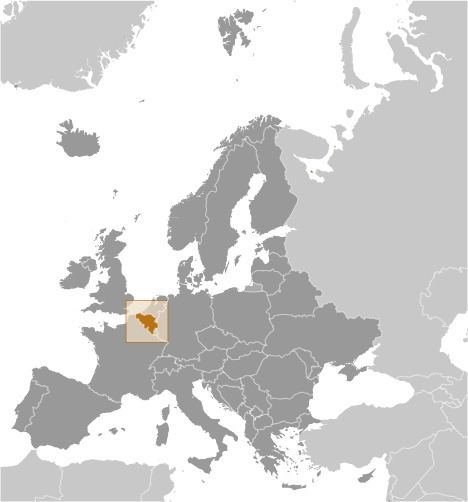
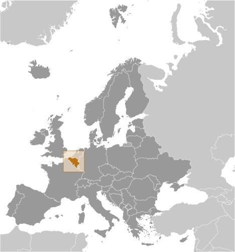

-
Introduction :: Belgium
-
Background:
Belgium became independent from the Netherlands in 1830; it was occupied by Germany during World Wars I and II. The country prospered in the past half century as a modern, technologically advanced European state and member of NATO and the EU. In recent years, political divisions between the Dutch-speaking Flemish of the north and the French-speaking Walloons of the south have led to constitutional amendments granting these regions formal recognition and autonomy. The capital city of Brussels is home to numerous international organizations including the EU and NATO.
-
Geography :: Belgium
-
Location:Western Europe, bordering the North Sea, between France and the NetherlandsGeographic coordinates:50 50 N, 4 00 EMap references:EuropeArea:total: 30,528 sq kmland: 30,278 sq kmwater: 250 sq kmcountry comparison to the world: 140Area - comparative:about the size of MarylandArea comparison map:
 The World Factbook Field Image ModalEurope :: Belgium Print
The World Factbook Field Image ModalEurope :: Belgium Print Image Description
Image Descriptionabout the size of Maryland
Land boundaries:total: 1,297 kmborder countries (4): France 556 km, Germany 133 km, Luxembourg 130 km, Netherlands 478 kmCoastline:66.5 kmMaritime claims:territorial sea: 12 nmexclusive economic zone: geographic coordinates define outer limitcontiguous zone: 24 nmcontinental shelf: median line with neighborsClimate:temperate; mild winters, cool summers; rainy, humid, cloudyTerrain:flat coastal plains in northwest, central rolling hills, rugged mountains of Ardennes Forest in southeastElevation:mean elevation: 181 mlowest point: North Sea 0 mhighest point: Botrange 694 mNatural resources:construction materials, silica sand, carbonates, arable landLand use:agricultural land: 44.1% (2011 est.)arable land: 27.2% (2011 est.) / permanent crops: 0.8% (2011 est.) / permanent pasture: 16.1% (2011 est.)forest: 22.4% (2011 est.)other: 33.5% (2011 est.)Irrigated land:230 sq km (2012)Population distribution:most of the population concentrated in the northern two-thirds of the country; the southeast is more thinly populated; considered to have one of the highest population densities in the world; approximately 97% live in urban areasNatural hazards:flooding is a threat along rivers and in areas of reclaimed coastal land, protected from the sea by concrete dikesEnvironment - current issues:intense pressures from human activities: urbanization, dense transportation network, industry, extensive animal breeding and crop cultivation; air and water pollution also have repercussions for neighboring countriesEnvironment - international agreements:party to: Air Pollution, Air Pollution-Nitrogen Oxides, Air Pollution-Persistent Organic Pollutants, Air Pollution-Sulfur 85, Air Pollution-Sulfur 94, Air Pollution-Volatile Organic Compounds, Antarctic-Environmental Protocol, Antarctic-Marine Living Resources, Antarctic Seals, Antarctic Treaty, Biodiversity, Climate Change, Climate Change-Kyoto Protocol, Desertification, Endangered Species, Environmental Modification, Hazardous Wastes, Law of the Sea, Marine Dumping, Marine Life Conservation, Ozone Layer Protection, Ship Pollution, Tropical Timber 83, Tropical Timber 94, Wetlands, Whalingsigned, but not ratified: none of the selected agreementsGeography - note:crossroads of Western Europe; most West European capitals are within 1,000 km of Brussels, the seat of both the European Union and NATO -
People and Society :: Belgium
-
Population:11,720,716 (July 2020 est.)country comparison to the world: 80Nationality:noun: Belgian(s)adjective: BelgianEthnic groups:Belgian 75.2%, Italian 4.1%, Moroccan 3.7%, French 2.4%, Turkish 2%, Dutch 2%, other 10.6% (2012 est.)Languages:Dutch (official) 60%, French (official) 40%, German (official) less than 1%Religions:Roman Catholic 50%, Protestant and other Christian 2.5%, Muslim 5%, Jewish 0.4%, Buddhist 0.3%, atheist 9.2%, none 32.6% (2009 est.)Age structure:0-14 years: 17.22% (male 1,033,383/female 984,624)15-24 years: 11.2% (male 670,724/female 642,145)25-54 years: 39.23% (male 2,319,777/female 2,278,450)55-64 years: 13.14% (male 764,902/female 775,454)65 years and over: 19.21% (male 988,148/female 1,263,109) (2020 est.)population pyramid:
 The World Factbook Field Image ModalEurope :: Belgium Print
The World Factbook Field Image ModalEurope :: Belgium Print Image DescriptionThis is the population pyramid for Belgium. A population pyramid illustrates the age and sex structure of a country's population and may provide insights about political and social stability, as well as economic development. The population is distributed along the horizontal axis, with males shown on the left and females on the right. The male and female populations are broken down into 5-year age groups represented as horizontal bars along the vertical axis, with the youngest age groups at the bottom and the oldest at the top. The shape of the population pyramid gradually evolves over time based on fertility, mortality, and international migration trends.
Image DescriptionThis is the population pyramid for Belgium. A population pyramid illustrates the age and sex structure of a country's population and may provide insights about political and social stability, as well as economic development. The population is distributed along the horizontal axis, with males shown on the left and females on the right. The male and female populations are broken down into 5-year age groups represented as horizontal bars along the vertical axis, with the youngest age groups at the bottom and the oldest at the top. The shape of the population pyramid gradually evolves over time based on fertility, mortality, and international migration trends.
For additional information, please see the entry for Population pyramid on the Definitions and Notes page under the References tab.Dependency ratios:total dependency ratio: 57youth dependency ratio: 26.7elderly dependency ratio: 30.2potential support ratio: 3.3 (2020 est.)Median age:total: 41.6 yearsmale: 40.4 yearsfemale: 42.8 years (2020 est.)country comparison to the world: 44Population growth rate:0.63% (2020 est.)country comparison to the world: 147Birth rate:11.1 births/1,000 population (2020 est.)country comparison to the world: 175Death rate:9.8 deaths/1,000 population (2020 est.)country comparison to the world: 40Net migration rate:4.8 migrant(s)/1,000 population (2020 est.)country comparison to the world: 25Population distribution:most of the population concentrated in the northern two-thirds of the country; the southeast is more thinly populated; considered to have one of the highest population densities in the world; approximately 97% live in urban areasUrbanization:urban population: 98.1% of total population (2020)rate of urbanization: 0.62% annual rate of change (2015-20 est.)total population growth rate v. urban population growth rate, 2000-2030: PDFMajor urban areas - population:2.081 million BRUSSELS (capital), 1.042 million Antwerp (2020)Sex ratio:at birth: 1.05 male(s)/female0-14 years: 1.05 male(s)/female15-24 years: 1.04 male(s)/female25-54 years: 1.02 male(s)/female55-64 years: 0.99 male(s)/female65 years and over: 0.78 male(s)/femaletotal population: 0.97 male(s)/female (2020 est.)Mother's mean age at first birth:29 years (2018 est.)Maternal mortality rate:5 deaths/100,000 live births (2017 est.)country comparison to the world: 164Infant mortality rate:total: 3.3 deaths/1,000 live birthsmale: 3.7 deaths/1,000 live birthsfemale: 2.9 deaths/1,000 live births (2020 est.)country comparison to the world: 204Life expectancy at birth:total population: 81.4 yearsmale: 78.8 yearsfemale: 84.2 years (2020 est.)country comparison to the world: 31Total fertility rate:1.77 children born/woman (2020 est.)country comparison to the world: 151Contraceptive prevalence rate:66.7% (2018)Drinking water source:improved: urban: 100% of populationrural: 100% of populationtotal: 100% of populationunimproved: urban: 0% of populationrural: 0% of populationtotal: 0% of population (2017 est.)Current Health Expenditure:10.3% (2017)Physicians density:3.07 physicians/1,000 population (2017)Hospital bed density:5.7 beds/1,000 population (2017)Sanitation facility access:improved: urban: 100% of populationrural: 100% of populationtotal: 100% of populationunimproved: urban: 0% of populationrural: 0% of populationtotal: 0% of population (2017 est.)HIV/AIDS - adult prevalence rate:NAHIV/AIDS - people living with HIV/AIDS:NAHIV/AIDS - deaths:NAObesity - adult prevalence rate:22.1% (2016)country comparison to the world: 81Education expenditures:6.4% of GDP (2017)country comparison to the world: 20School life expectancy (primary to tertiary education):total: 20 yearsmale: 19 yearsfemale: 21 years (2018)Unemployment, youth ages 15-24:total: 15.8%male: 16.2%female: 15.3% (2018 est.)country comparison to the world: 86 -
Government :: Belgium
-
Country name:conventional long form: Kingdom of Belgiumconventional short form: Belgiumlocal long form: Royaume de Belgique (French)/Koninkrijk Belgie (Dutch)/Koenigreich Belgien (German)local short form: Belgique/Belgie/Belgienetymology: the name derives from the Belgae, an ancient Celtic tribal confederation that inhabited an area between the English Channel and the west bank of the Rhine in the first centuries B.C.Government type:federal parliamentary democracy under a constitutional monarchyCapital:name: Brusselsgeographic coordinates: 50 50 N, 4 20 Etime difference: UTC+1 (6 hours ahead of Washington, DC, during Standard Time)daylight saving time: +1hr, begins last Sunday in March; ends last Sunday in Octoberetymology: may derive from the Old Dutch "bruoc/broek," meaning "marsh" and "sella/zele/sel" signifying "home" to express the meaning "home in the marsh"Administrative divisions:3 regions (French: regions, singular - region; Dutch: gewesten, singular - gewest); Brussels-Capital Region, also known as Brussels Hoofdstedelijk Gewest (Dutch), Region de Bruxelles-Capitale (French long form), Bruxelles-Capitale (French short form); Flemish Region (Flanders), also known as Vlaams Gewest (Dutch long form), Vlaanderen (Dutch short form), Region Flamande (French long form), Flandre (French short form); Walloon Region (Wallonia), also known as Region Wallone (French long form), Wallonie (French short form), Waals Gewest (Dutch long form), Wallonie (Dutch short form)
note: as a result of the 1993 constitutional revision that furthered devolution into a federal state, there are now three levels of government (federal, regional, and linguistic community) with a complex division of responsibilities; the 2012 sixth state reform transferred additional competencies from the federal state to the regions and linguistic communities
Independence:4 October 1830 (a provisional government declared independence from the Netherlands); 21 July 1831 (King LEOPOLD I ascended to the throne)National holiday:Belgian National Day (ascension to the throne of King LEOPOLD I), 21 July (1831)Constitution:history: drafted 25 November 1830, approved 7 February 1831, entered into force 26 July 1831, revised 14 July 1993 (creating a federal state)amendments: "revisions" proposed as declarations by the federal government in accord with the king or by Parliament followed by dissolution of Parliament and new elections; adoption requires two-thirds majority vote of a two-thirds quorum in both houses of the next elected Parliament; amended many times, last in 2014Legal system:civil law system based on the French Civil Code; note - Belgian law continues to be modified in conformance with the legislative norms mandated by the European Union; judicial review of legislative actsInternational law organization participation:accepts compulsory ICJ jurisdiction with reservations; accepts ICCt jurisdictionCitizenship:citizenship by birth: nocitizenship by descent only: at least one parent must be a citizen of Belgiumdual citizenship recognized: yesresidency requirement for naturalization: 5 yearsSuffrage:18 years of age; universal and compulsoryExecutive branch:chief of state: King PHILIPPE (since 21 July 2013); Heir Apparent Princess ELISABETH (daughter of the monarch, born 25 October 2001)head of government: Prime Minister Alexander DE CROO (since 1 October 2020); Deputy Prime Ministers Koen GEENS (27 October 2019), Didier REYNDERS (since 27 October 2019), David CLARINVAL (30 November 2019), Petra DE SUTTER (since 1 October 2020)cabinet: Council of Ministers formally appointed by the monarchelections/appointments: the monarchy is hereditary and constitutional; following legislative elections, the leader of the majority party or majority coalition usually appointed prime minister by the monarch and approved by ParliamentLegislative branch:description: bicameral Parliament consists of:
Senate or Senaat (in Dutch), Senat (in French) (60 seats; 50 members indirectly elected by the community and regional parliaments based on their election results, and 10 elected by the 50 other senators; members serve 5-year terms)
Chamber of Representatives or Kamer van Volksvertegenwoordigers (in Dutch), Chambre des Representants (in French) (150 seats; members directly elected in multi-seat constituencies by proportional representation vote; members serve 5-year terms)elections:Senate - last held 26 May 2019 (next to be held in 2024)
Chamber of Representatives - last held on 26 May 2019 (next to be held in 2024); note - elections coincided with the EU electionselection results: Senate - percent of vote by party - NA; seats by party - NA; composition men 32, women 28, percent of women 46.7%
Chamber of Representatives - percent of vote by party - N-VA 16.0%, VB 11.9%, PS 9.5%, CD&V 8.9%, PVDA+/PTB 8.62%, Open VLD 8.5%, MR 7.6%, SP.A 6.7%, Ecolo 6.1%, Groen 6.1%, CDH 3.7%, Defi 2.2%, PP 1.1%, other 20.1%; seats by party - N-VA 25, VB 18, PS 20, CD&V 12, PVDA+PTB 12, Open VLD 12, MR 14, SP.A 9, Ecolo 13, Groen 8, CDH 5, Defi 2; composition - men 86, women 64, percent of women 42.7%note: the 1993 constitutional revision that further devolved Belgium into a federal state created three levels of government (federal, regional, and linguistic community) with a complex division of responsibilities; this reality leaves six governments, each with its own legislative assembly; changes above occurred since the sixth state reform
Judicial branch:highest courts: Constitutional Court or Grondwettelijk Hof (in Dutch) and Cour Constitutionelle (in French) (consists of 12 judges - 6 Dutch-speaking and 6 French-speaking); Supreme Court of Justice or Hof van Cassatie (in Dutch) and Cour de Cassation (in French) (court organized into 3 chambers: civil and commercial; criminal; social, fiscal, and armed forces; each chamber includes a Dutch division and a French division, each with a chairperson and 5-6 judges)judge selection and term of office: Constitutional Court judges appointed by the monarch from candidates submitted by Parliament; judges appointed for life with mandatory retirement at age 70; Supreme Court judges appointed by the monarch from candidates submitted by the High Council of Justice, a 44-member independent body of judicial and non-judicial members; judges appointed for lifesubordinate courts: Courts of Appeal; regional courts; specialized courts for administrative, commercial, labor, immigration, and audit issues; magistrate's courts; justices of the peacePolitical parties and leaders:Flemish parties:
Christian Democratic and Flemish or CD&V [Wouter BEKE]
Flemish Liberals and Democrats or Open VLD [Gwendolyn RUTTEN]
Groen [Meyrem ALMACI] (formerly AGALEV, Flemish Greens)
New Flemish Alliance or N-VA [Bart DE WEVER]
Social Progressive Alternative or SP.A [John CROMBEZ]
Vlaams Belang (Flemish Interest) or VB [Tom VAN GRIEKEN]
Francophone parties:
Ecolo (Francophone Greens) [Jean-Marc NOLLET, Zakia KHATTABI]
Francophone Federalist Democrats or Defi [Olivier MAINGAIN]
Humanist and Democratic Center or CDH [Maxine PREVOT]
People's Party or PP [Mischael MODRIKAMEN]
Reform Movement or MR [Charles MICHEL]
Socialist Party or PS [Elio DI RUPO]
Workers' Party or PTB [Peter MERTENS]
other minor partiesInternational organization participation:ADB (nonregional members), AfDB (nonregional members), Australia Group, Benelux, BIS, CD, CE, CERN, EAPC, EBRD, ECB, EIB, EITI (implementing country), EMU, ESA, EU, FAO, FATF, G-9, G-10, IADB, IAEA, IBRD, ICAO, ICC (national committees), ICCt, ICRM, IDA, IEA, IFAD, IFC, IFRCS, IGAD (partners), IHO, ILO, IMF, IMO, IMSO, Interpol, IOC, IOM, IPU, ISO, ITSO, ITU, ITUC (NGOs), MIGA, MONUSCO, NATO, NEA, NSG, OAS (observer), OECD, OIF, OPCW, OSCE, Pacific Alliance (observer), Paris Club, PCA, Schengen Convention, SELEC (observer), UN, UNCTAD, UNESCO, UNHCR, UNIDO, UNIFIL, UNRWA, UNTSO, UPU, WCO, WHO, WIPO, WMO, WTO, ZCDiplomatic representation in the US:chief of mission: Ambassador Jean Arthur REGIBEAU (since 17 September 2020)chancery: 3330 Garfield Street NW, Washington, DC 20008telephone: [1] (202) 333-6900FAX: [1] (202) 333-3079consulate(s) general: Atlanta, Los Angeles, New YorkDiplomatic representation from the US:chief of mission: Ambassador Ronald GIDWITZ (since 4 July 2018)telephone: [32] (2) 811-4000embassy: 27 Boulevard du Regent [Regentlaan], B-1000 Brusselsmailing address: PSC 82, Box 002, APO AE 09710FAX: [32] (2) 811-4500Flag description:three equal vertical bands of black (hoist side), yellow, and red; the vertical design was based on the flag of France; the colors are those of the arms of the duchy of Brabant (yellow lion with red claws and tongue on a black field)National symbol(s):golden rampant lion; national colors: red, black, yellowNational anthem:name: "La Brabanconne" (The Song of Brabant)lyrics/music: Louis-Alexandre DECHET[French] Victor CEULEMANS [Dutch]/Francois VAN CAMPENHOUTnote: adopted 1830; according to legend, Louis-Alexandre DECHET, an actor at the theater in which the revolution against the Netherlands began, wrote the lyrics with a group of young people in a Brussels cafe
-
Economy :: Belgium
-
Economic overview:
Belgium’s central geographic location and highly developed transport network have helped develop a well-diversified economy, with a broad mix of transport, services, manufacturing, and high tech. Service and high-tech industries are concentrated in the northern Flanders region while the southern region of Wallonia is home to industries like coal and steel manufacturing. Belgium is completely reliant on foreign sources of fossil fuels, and the planned closure of its seven nuclear plants by 2025 should increase its dependence on foreign energy. Its role as a regional logistical hub makes its economy vulnerable to shifts in foreign demand, particularly with EU trading partners. Roughly three-quarters of Belgium's trade is with other EU countries, and the port of Zeebrugge conducts almost half its trade with the United Kingdom alone, leaving Belgium’s economy vulnerable to the outcome of negotiations on the UK’s exit from the EU.
Belgium’s GDP grew by 1.7% in 2017 and the budget deficit was 1.5% of GDP. Unemployment stood at 7.3%, however the unemployment rate is lower in Flanders than Wallonia, 4.4% compared to 9.4%, because of industrial differences between the regions. The economy largely recovered from the March 2016 terrorist attacks that mainly impacted the Brussels region tourist and hospitality industry. Prime Minister Charles MICHEL's center-right government has pledged to further reduce the deficit in response to EU pressure to decrease Belgium's high public debt of about 104% of GDP, but such efforts would also dampen economic growth. In addition to restrained public spending, low wage growth and higher inflation promise to curtail a more robust recovery in private consumption.
The government has pledged to pursue a reform program to improve Belgium’s competitiveness, including changes to labor market rules and welfare benefits. These changes have generally made Belgian wages more competitive regionally, but have raised tensions with trade unions, which have called for extended strikes. In 2017, Belgium approved a tax reform plan to ease corporate rates from 33% to 29% by 2018 and down to 25% by 2020. The tax plan also included benefits for innovation and SMEs, intended to spur competitiveness and private investment.
GDP real growth rate:1.41% (2019 est.)1.49% (2018 est.)1.9% (2017 est.)country comparison to the world: 157Inflation rate (consumer prices):1.4% (2019 est.)2% (2018 est.)2.1% (2017 est.)country comparison to the world: 84Credit ratings:Fitch rating: AA- (2016)Moody's rating: Aa3 (2011)Standard & Poors rating: AA (2011)GDP (purchasing power parity) - real:$493.888 billion (2019 est.)$485.425 billion (2018 est.)$476.784 billion (2017 est.)note: data are in 2010 dollars
GDP (official exchange rate):$533.028 billion (2019 est.)GDP - per capita (PPP):$47,478 (2019 est.)$46,896 (2018 est.)$46,313 (2017 est.)note: data are in 2010 dollars
country comparison to the world: 33Gross national saving:24.5% of GDP (2017 est.)24% of GDP (2016 est.)23.4% of GDP (2015 est.)country comparison to the world: 65GDP - composition, by sector of origin:agriculture: 0.7% (2017 est.)industry: 22.1% (2017 est.)services: 77.2% (2017 est.)GDP - composition, by end use:household consumption: 51.2% (2017 est.)government consumption: 23.4% (2017 est.)investment in fixed capital: 23.3% (2017 est.)investment in inventories: 1.3% (2017 est.)exports of goods and services: 85.1% (2017 est.)imports of goods and services: -84.4% (2017 est.)Ease of Doing Business Index scores:75.0 (2020)Agriculture - products:sugar beets, fresh vegetables, fruits, grain, tobacco; beef, veal, pork, milkIndustries:engineering and metal products, motor vehicle assembly, transportation equipment, scientific instruments, processed food and beverages, chemicals, pharmaceuticals, base metals, textiles, glass, petroleumIndustrial production growth rate:0.2% (2017 est.)country comparison to the world: 168Labor force:4.122 million (2020 est.)country comparison to the world: 88Labor force - by occupation:agriculture: 1.3%industry: 18.6%services: 80.1% (2013 est.)Unemployment rate:5.36% (2019 est.)5.96% (2018 est.)country comparison to the world: 86Population below poverty line:15.1% (2013 est.)Budget:revenues: 253.5 billion (2017 est.)expenditures: 258.6 billion (2017 est.)Taxes and other revenues:51.3% (of GDP) (2017 est.)country comparison to the world: 15Budget surplus (+) or deficit (-):-1% (of GDP) (2017 est.)country comparison to the world: 74Public debt:103.4% of GDP (2017 est.)106% of GDP (2016 est.)note: data cover general government debt and includes debt instruments issued (or owned) by government entities other than the treasury; the data include treasury debt held by foreign entities; the data include debt issued by subnational entities, as well as intra-governmental debt; intra-governmental debt consists of treasury borrowings from surpluses in the social funds, such as for retirement, medical care, and unemployment; debt instruments for the social funds are not sold at public auctions; general government debt is defined by the Maastricht definition and calculated by the National Bank of Belgium as consolidated gross debt; the debt is defined in European Regulation EC479/2009 concerning the implementation of the protocol on the excessive deficit procedure annexed to the Treaty on European Union (Treaty of Maastricht) of 7 February 1992; the sub-sectors of consolidated gross debt are: federal government, communities and regions, local government, and social security funds
country comparison to the world: 13Fiscal year:calendar yearCurrent account balance:$1.843 billion (2019 est.)-$4.135 billion (2018 est.)country comparison to the world: 41Exports:$474.278 billion (2019 est.)$469.48 billion (2018 est.)$466.732 billion (2017 est.)country comparison to the world: 18Exports - partners:Germany 16.6%, France 14.9%, Netherlands 12%, UK 8.4%, Italy 4.9%, US 4.8% (2017)Exports - commodities:chemicals, machinery and equipment, finished diamonds, metals and metal products, foodstuffsImports:$473.129 billion (2019 est.)$469.546 billion (2018 est.)$463.706 billion (2017 est.)country comparison to the world: 17Imports - commodities:raw materials, machinery and equipment, chemicals, raw diamonds, pharmaceuticals, foodstuffs, transportation equipment, oil productsImports - partners:Netherlands 17.3%, Germany 13.8%, France 9.5%, US 7.1%, UK 4.9%, Ireland 4.2%, China 4.1% (2017)Reserves of foreign exchange and gold:$26.16 billion (31 December 2017 est.)$24.1 billion (31 December 2015 est.)country comparison to the world: 54Debt - external:$1.281 trillion (31 March 2016 est.)$1.214 trillion (31 March 2015 est.)country comparison to the world: 15Exchange rates:euros (EUR) per US dollar -0.82771 (2020 est.)0.90338 (2019 est.)0.87789 (2018 est.)0.885 (2014 est.)0.7634 (2013 est.) -
Energy :: Belgium
-
Electricity access:electrification - total population: 100% (2020)Electricity - production:79.83 billion kWh (2016 est.)country comparison to the world: 37Electricity - consumption:82.16 billion kWh (2016 est.)country comparison to the world: 36Electricity - exports:8.465 billion kWh (2016 est.)country comparison to the world: 25Electricity - imports:14.65 billion kWh (2016 est.)country comparison to the world: 15Electricity - installed generating capacity:21.56 million kW (2016 est.)country comparison to the world: 41Electricity - from fossil fuels:35% of total installed capacity (2016 est.)country comparison to the world: 176Electricity - from nuclear fuels:28% of total installed capacity (2017 est.)country comparison to the world: 2Electricity - from hydroelectric plants:1% of total installed capacity (2017 est.)country comparison to the world: 146Electricity - from other renewable sources:36% of total installed capacity (2017 est.)country comparison to the world: 8Crude oil - production:0 bbl/day (2018 est.)country comparison to the world: 109Crude oil - exports:0 bbl/day (2017 est.)country comparison to the world: 92Crude oil - imports:687,600 bbl/day (2017 est.)country comparison to the world: 16Crude oil - proved reserves:0 bbl (1 January 2018 est.)country comparison to the world: 106Refined petroleum products - production:731,700 bbl/day (2017 est.)country comparison to the world: 25Refined petroleum products - consumption:648,600 bbl/day (2017 est.)country comparison to the world: 31Refined petroleum products - exports:680,800 bbl/day (2017 est.)country comparison to the world: 12Refined petroleum products - imports:601,400 bbl/day (2017 est.)country comparison to the world: 14Natural gas - production:0 cu m (2017 est.)country comparison to the world: 102Natural gas - consumption:17.61 billion cu m (2017 est.)country comparison to the world: 40Natural gas - exports:736.2 million cu m (2017 est.)country comparison to the world: 40Natural gas - imports:18.09 billion cu m (2017 est.)country comparison to the world: 17Natural gas - proved reserves:0 cu m (1 January 2014 est.)country comparison to the world: 109Carbon dioxide emissions from consumption of energy:134.7 million Mt (2017 est.)country comparison to the world: 35
-
Communications :: Belgium
-
Telephones - fixed lines:total subscriptions: 3,967,054subscriptions per 100 inhabitants: 34.06 (2019 est.)country comparison to the world: 34Telephones - mobile cellular:total subscriptions: 11,616,970subscriptions per 100 inhabitants: 99.74 (2019 est.)country comparison to the world: 78Telecommunication systems:general assessment: highly developed, technologically advanced, and completely automated domestic and international telephone and telegraph facilities; LTE availability is nearly universal in mobile sector; ongoing investments in developing applications and services for migration to 5G, operators are looking into repurposing 3G infrastructure and spectrum as they gear up for 5G; Europe-wide approach to simultaneous movement to 5G on going; 5G will be main motivation for growth and revenue in years to come; consumer are interested in quad-play/bundled services (broadband +television +telephone +wireless services) which will mean MNOs (mobile network operators) are enhancing their fixed-line offerings (2020)domestic: 34 per 100 fixed-line, 100 per 100 mobile-cellular; nationwide mobile-cellular telephone system; extensive cable network; limited microwave radio relay network (2019)international: country code - 32; landing points for Concerto, UK-Belgium, Tangerine, and SeaMeWe-3, submarine cables that provide links to Europe, the Middle East, Australia and Asia; satellite earth stations - 7 (Intelsat - 3) (2019)note: the COVID-19 outbreak is negatively impacting telecommunications production and supply chains globally; consumer spending on telecom devices and services has also slowed due to the pandemic's effect on economies worldwide; overall progress towards improvements in all facets of the telecom industry - mobile, fixed-line, broadband, submarine cable and satellite - has moderatedBroadcast media:a segmented market with the three major communities (Flemish, French, and German-speaking) each having responsibility for their own broadcast media; multiple TV channels exist for each community; additionally, in excess of 90% of households are connected to cable and can access broadcasts of TV stations from neighboring countries; each community has a public radio network coexisting with private broadcastersInternet country code:.beInternet users:total: 10,258,638percent of population: 88.66% (July 2018 est.)country comparison to the world: 51Broadband - fixed subscriptions:total: 4,502,950subscriptions per 100 inhabitants: 39 (2018 est.)country comparison to the world: 31
-
Transportation :: Belgium
-
National air transport system:number of registered air carriers: 7 (2020)inventory of registered aircraft operated by air carriers: 117annual passenger traffic on registered air carriers: 13,639,487 (2018)annual freight traffic on registered air carriers: 1,285,340,000 mt-km (2018)Civil aircraft registration country code prefix:OO (2016)Airports:41 (2013)country comparison to the world: 102Airports - with paved runways:total: 26 (2019)over 3,047 m: 62,438 to 3,047 m: 91,524 to 2,437 m: 2914 to 1,523 m: 1under 914 m: 8Airports - with unpaved runways:total: 15 (2013)under 914 m: 15 (2013)Heliports:1 (2013)Pipelines:3139 km gas, 154 km oil, 535 km refined products (2013)Railways:total: 3,592 km (2014)standard gauge: 3,592 km 1.435-m gauge (2,960 km electrified) (2014)country comparison to the world: 55Roadways:total: 118,414 km (2015)paved: 118,414 km (includes 1,747 km of expressways) (2015)country comparison to the world: 41Waterways:2,043 km (1,528 km in regular commercial use) (2012)country comparison to the world: 41Merchant marine:total: 201by type: bulk carrier 21general cargo 17, oil tanker 26, other 137 (2019)country comparison to the world: 67Ports and terminals:major seaport(s): Oostende, Zeebruggecontainer port(s) (TEUs): Antwerp (10,450,000) (2017)LNG terminal(s) (import): Zeebruggeriver port(s): Antwerp, Gent (Schelde River)Brussels (Senne River) Liege (Meuse River)
-
Military and Security :: Belgium
-
Military and security forces:Belgian Armed Forces: Land Component, Naval Component, Air Component, Medical Service (2019)Military expenditures:0.93% of GDP (2019)0.93% of GDP (2018)0.9% of GDP (2017)0.91% of GDP (2016)0.92% of GDP (2015)country comparison to the world: 123Military and security service personnel strengths:the Belgian Armed Forces have approximately 27,000 active duty personnel (10,500 Army; 1,500 Navy; 5,000 Air Force; 1,200 Medical Service; 9,000 other, including joint staff, support, and training schools) (2019)Military equipment inventories and acquisitions:the Belgian Armed Forces have a mix of weapons systems from European countries, Israel, and the US; since 2010, France, Germany, and Switzerland are the leading suppliers of armaments; Belgium has an advanced, export-focused defense industry that focuses on components and subcontracting (2019 est.)Military deployments:125 France (contributing member of EuroCorps); 100 Mali (EUTM/MINUSMA); est. 260 Baltic States (NATO) (2020)Military service age and obligation:18 years of age for male and female voluntary military service; conscription abolished in 1994 (2012)Military - note:in 2018, the Defense Ministers of Belgium, Denmark and the Netherlands signed a Memorandum of Understanding (MOU) for the creation of a Composite Special Operations Component Command (C-SOCC); the C-SOCC was declared operational in December 2020
-
Terrorism :: Belgium
-
Terrorist group(s):Islamic Revolutionary Guard Corps/Qods Force; Islamic State of Iraq and ash-Sham (2020)note: details about the history, aims, leadership, organization, areas of operation, tactics, targets, weapons, size, and sources of support of the group(s) appear(s) in Appendix-T
-
Transnational Issues :: Belgium
-
Disputes - international:
none
Refugees and internally displaced persons:refugees (country of origin): 16,604 (Syria), 5,602 (Iraq), 5,070 (Afghanistan) (2019)stateless persons: 10,933 (2019)Illicit drugs:growing producer of synthetic drugs and cannabis; transit point for US-bound ecstasy; source of precursor chemicals for South American cocaine processors; transshipment point for cocaine, heroin, hashish, and marijuana entering Western Europe; despite a strengthening of legislation, the country remains vulnerable to money laundering related to narcotics, automobiles, alcohol, and tobacco; significant domestic consumption of ecstasy
Europe ::
Belgium